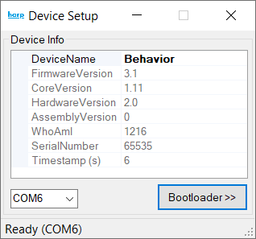
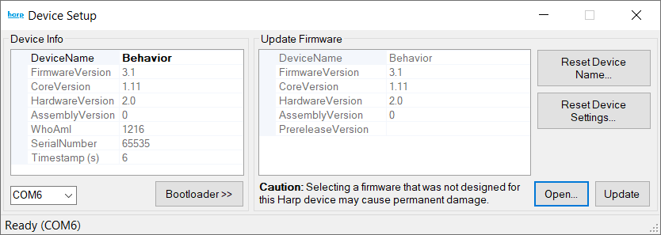

Firmware
As Harp devices are updated, new features are added and bugs are fixed. Device-specific interfaces depend on the right firmware being installed on your device. This section details how to check and maintain the correct version of device firmware to ensure reproducible workflows.
Updating device firmware
To ensure that your device is running the latest firmware, you can use the Device Setup tool available in Bonsai. This tool is made available by installing the Bonsai.Harp.Design package. To launch it, simply add a generic Device node to your workflow, and open its default editor (by double-clicking on the node). If a Harp device is detected on the currently selected COM port, the following dialog will appear:

To update the device's firmware version:
- Click
Bootloader; - Click
Open; - Select a
.hexfile containing the new firmware. These files should be available on the device's releases page (e.g.: Harp Behavior under thefwX.Y-harpV.Wrelease name). Importantly, as stated in the dialog window, please ensure the the new firmware is compatible with the targeted device; - Click
Update.

If everything goes well, the device will reboot with the new firmware.